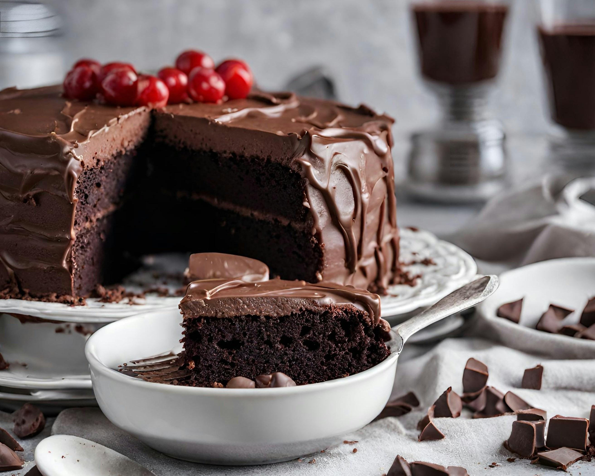

Ingredientes:
- 2 xícaras de farinha de trigo
- 1 xícara de açúcar
- 1/2 xícara de cacau em pó
- 1 colher de chá de fermento em pó
- 1/2 colher de chá de bicarbonato de sódio
- 1/4 colher de chá de sal
- 1 xícara de leite
- 1/2 xícara de óleo vegetal
- 2 ovos
- 1 colher de chá de essência de baunilha
Modo de Preparo:
- Pré-aqueça o forno a 180°C.
- Em uma tigela grande, misture a farinha, o açúcar, o cacau, o fermento, o bicarbonato e o sal.
- Adicione o leite, o óleo, os ovos e a essência de baunilha. Misture até obter uma massa homogênea.
- Despeje a massa em uma forma untada e enfarinhada.
- Asse por cerca de 30-35 minutos ou até que um palito inserido no centro saia limpo.
- Deixe esfriar antes de desenformar e servir.